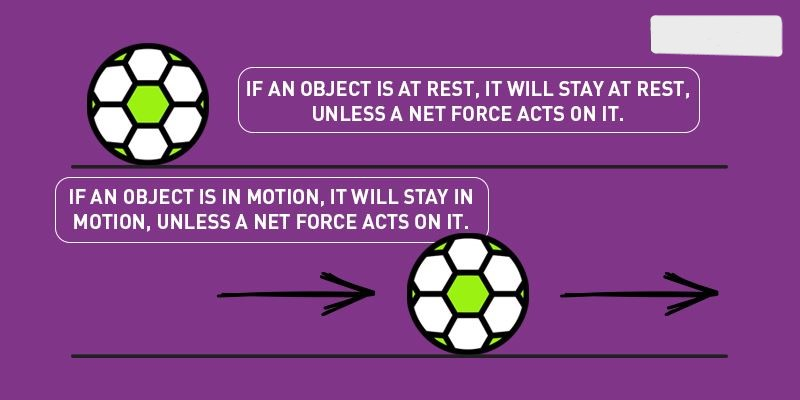
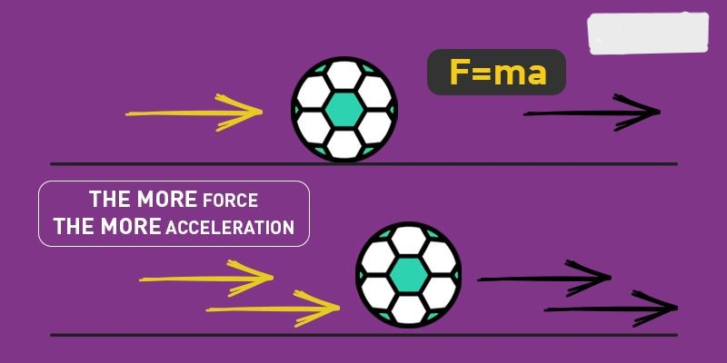
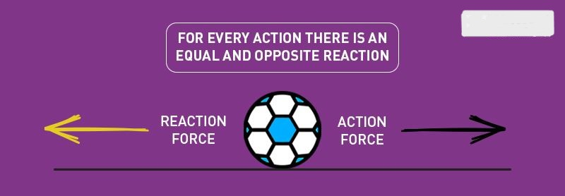

News About Science
Some news about Scientific Discovery's
We are glad that you have come to our website to read scientific news. We know that you are highly
influenced by science and its events.
Introduction to Relativity
Albert Einstein's theory of relativity revolutionized our understanding of space and time. Albert Einstein's
theory of relativity is a fundamental concept in modern physics.
Albert Einstein's theory of relativity is one of the most famous scientific theories in the world.Relativity
is a theorem formulated by Albert Einstein, which states that space and time are relative, and all motion
must be relative to a frame of reference. It is a notion that states’ laws of physics are the same
everywhere. This theory is simple but hard to understand.
It states:
-
There is no absolute reference frame. One can measure velocity if the object or momentum is only in
relation to other objects.
-
The speed of light is constant irrespective of who measures it or how fast the person measuring it is
moving.
-
Albert Einstein’s Theory of Relativity encompasses two theories: Special Relativity Theory and General
Relativity Theory.
Special Theory of Relativity
Einstein first introduced this term in the year 1905. It is a theorem that deals with the structure of
space-time. Einstein explained this theory based on two postulates –
-
The laws of physics are the same for all, irrespective of the observer’s velocity.
-
The speed of light is always constant regardless of the motion of the light source or the motion of the
observer.
This is the theory which laid the foundation of time travel. According to Einstein, the rate at which time
tics decreases with the increase of the person’s velocity. But this is hard to notice as the decrease in
time is relatively very low compared to the increase in time. So, it can be assumed that if you can equal
the velocity of light, you will be in a situation where time is still. This phenomenon is called Time
Dilation. There are other surprising consequences of this theory, such as –
-
Relativity of simultaneity
– two actions, simultaneous for one person, may not be simultaneous for another person in
relative motion
-
Length Shrinking:
Objects are measured and appear shorter in the direction they are moving with respect to the observer.
-
Mass –
Energy Equivalence: Study of relativity led to one of the greatest inventions, i.e., E = mc2 where E is
Energy, m stands for mass and c for the velocity of light. Many scientists observed that the object’s
mass increases with the velocity but never knew how to calculate it. This equation is the answer to
their problem, which explains that the increased relativistic weight of the object is equal to the
kinetic energy divided by the square of the speed of light.
General Theory of Relativity
General Relativity theory, developed by Einstein in 1907-1915, states that being at rest in the
gravitational field and accelerating are identical physically. For example, an observer can see the ball
fall the same way on the rocket and on Earth. This is due to the rocket’s acceleration, which equals 9.8
m/s2. This theory relates to Newton’s gravitational theory and special relativity.
Some Consequences of General Relativity are :
-
Gravitational Time Dilation: Gravity influences the passage of time. Clocks in the deeper
gravitational wells run slower than in general gravitational levels.
-
Light rays will bend in the gravitational field.
-
The universe is expanding, and parts of it are moving away from Earth faster than the speed of
light.
Newton’s First Law of Motion
Newton’s First Law of Motion, also known as the Law of Inertia, is a fundamental principle that describes
the behaviour of objects in the absence of external influences. The term “Law of Inertia” emphasizes the
concept of inertia, which refers to the property of massive objects to resist changes in their state of
motion. This idea stems from the observation that objects naturally maintain their current state of rest or
motion, resisting any changes unless acted upon by an external force.
By naming the first law of motion the “Law of Inertia,” Newton highlighted this inherent property of objects
and laid the groundwork for understanding how forces can cause changes in motion. Newton’s first law of
motion states that objects persist in their current state of motion unless compelled to do otherwise by an
external force. Whether an object is at rest or in uniform motion, it will continue in that state unless a
net external force acts upon it.

One crucial insight provided by Newton’s First Law is that the object will maintain a constant velocity in
the absence of a net force resulting from unbalanced forces acting on an object. If the object is already in
motion, it will continue moving at the same speed and direction. Likewise, if the object is at rest, it will
remain stationary. However, introducing an additional external force will cause the object’s velocity to
change, responding to the magnitude and direction of the force applied.
Understanding Newton’s First Law of Motion sets the stage for a deeper exploration of the subsequent laws
that govern the complexities of motion. By comprehending this fundamental principle, we gain crucial
insights into how objects behave independently and how external forces influence their motion. The first law
of motion provides a strong foundation for further understanding the dynamics and behaviour of objects in
the physical world.
Newton’s Second Law of Motion
This section will explore Newton’s Second Law of Motion, which provides a deeper understanding of how bodies
respond to external forces.
The second law of motion describes the relationship between the force acting on a body and the resulting
acceleration. According to Newton’s second law, the force acting on an object is equal to the product of its
mass and acceleration.
Mathematically, we express Newton’s Second Law as follows:
F = ma
Here, F represents the force, m is the object’s mass and a is the acceleration produced. This equation
reveals that the acceleration of an object is directly proportional to the magnitude of the net force
applied in the same direction as the force and inversely proportional to the object’s mass.

By understanding Newton’s Second Law, we can determine how much an object will accelerate when subjected to
a specific net force. The equation highlights the intricate relationship between force, mass, and
acceleration, providing a quantitative framework for analysing the dynamics of objects in motion.
In the second law equation, a proportionality constant is represented by the letter “k.” When using the SI
unit system, this constant is equal to 1. Therefore, the final expression simplifies to:
F = ma
The concise and powerful expression of Newton’s Second Law showcases the fundamental principle that governs
the relationship between force and acceleration in physics. With this law, we gain a quantitative
understanding of how external forces impact the motion of objects based on their mass and the resulting
acceleration they experience.
By exploring Newton’s Second Law of Motion, we deepen our insights into the mechanics of motion, setting the
stage for further exploration of the principles that govern the complexities of physical phenomena.
Newton’s Third Law of Motion
This section will discuss Newton’s Third Law of Motion, revealing a fascinating relationship between forces
exerted by interacting bodies.
Newton’s Third Law of Motion states that for every action, there is an equal and opposite reaction. When two
bodies interact, they apply forces on each other that are equal in magnitude and opposite in direction. This
law highlights the concept that forces always occur in pairs.

To illustrate this principle, consider the example of a book resting on a table. As the book applies a
downward force equal to its weight on the table, the table, in turn, exerts an equal and opposite force on
the book. This occurs because the book slightly deforms the table’s surface, causing the table to push back
on the book, much like a compressed spring releasing its energy.
This third law of motion has profound implications, including conserving momentum. Momentum is a property of
moving objects determined by an object’s mass and velocity. According to Newton’s third law, the total
momentum of an isolated system remains constant. This means that in any interaction, the total momentum
before and after the interaction remains the same, regardless of the forces involved.
Understanding Newton’s third law of motion deepens our comprehension of the interconnectedness and
equilibrium within the physical world. It provides a framework for analysing and predicting the effects of
forces in various scenarios, from everyday interactions to complex mechanical systems.
As we delve further into the subsequent sections on the laws of motion, we will continue building upon the
foundational principles of inertia, force, and action-reaction relationships.
A ballistic missile (BM) is a type of missile that uses projectile motion to deliver warheads on a target.
These weapons are powered only during relatively brief periods—most of the flight is unpowered. Short-range
ballistic missiles (SRBM) typically stay within the Earth's atmosphere, while most larger missiles are
exo-atmospheric. The largest ICBMs are capable of full orbital flight. These weapons are in a distinct
category from cruise missiles, which are aerodynamically guided in powered flight and thus restricted to the
atmosphere.
History
One modern pioneer ballistic missile was the A-4, commonly known as the V-2 developed by Nazi Germany in the
1930s and 1940s under the direction of Wernher von Braun. The first successful launch of a V-2 was on
October 3, 1942, and it began operation on September 6, 1944, against Paris, followed by an attack on London
two days later. By the end of World War II in Europe in May 1945, more than 3,000 V-2s had been launched
Flight
An intercontinental ballistic missile trajectory consists of three parts: the powered flight portion; the
free-flight portion, which constitutes most of the flight time; and the re-entry phase, where the missile
re-enters the Earth's atmosphere. The flight phases for shorter-range ballistic missiles are essentially the
first two phases of the ICBM, as some ballistic categories do not leave the atmosphere.
Ballistic missiles can be launched from fixed sites or mobile launchers, including vehicles (e.g.,
transporter erector launchers), aircraft, ships, and submarines. The powered flight portion can last from a
few tenths of seconds to several minutes and can consist of multiple rocket stages.
When the fuel is exhausted, no more thrust is provided and the missile enters free flight. In order to cover
large distances, ballistic missiles are usually launched into a high sub-orbital spaceflight; for
intercontinental missiles, the highest altitude (apogee) reached during free-flight is about 4,500
kilometers (2,800 mi).
The re-entry stage begins at an altitude where atmospheric drag plays a significant part in missile
trajectory, and lasts until missile impact.[4] Re-entry vehicles re-enter the Earth's atmosphere at very
high velocities, on the order of 6–8 kilometers per second (22,000–29,000 km/h; 13,000–18,000 mph) at ICBM
ranges.
Types
Ballistic missiles vary widely in range and use, and are often divided into categories based on range.
Various schemes are used by different countries to categorize the ranges of ballistic missiles:
-
Air-launched ballistic missile (ALBM)
-
Tactical ballistic missile: Range from about 150 to 300 kilometres (93 to 186 mi)
-
Theatre ballistic missile (TBM): Range from 300 to 3,500 kilometres (190 to 2,170 mi)
-
Short-range ballistic missile (SRBM): Range from 300 to 1,000 kilometres (190 to 620 mi)
-
Medium-range ballistic missile (MRBM): Range from 1,000 to 3,500 kilometres (620 to 2,170 mi)
-
Intermediate-range ballistic missile (IRBM) or long-range ballistic missile (LRBM): Range from 3,500 to
5,500 kilometres (2,200 to 3,400 mi)
-
Intercontinental ballistic missile (ICBM): Range greater than 5,500 kilometres (3,400 mi)
-
Submarine-launched ballistic missile (SLBM): Launched from ballistic missile submarines (SSBNs)
Long- and medium-range ballistic missiles are generally designed to deliver nuclear weapons because their
payload is too limited for conventional explosives to be cost-effective in comparison to conventional bomber
aircraft.
Nuclear fission is a process in which the nucleus of an atom splits into two or smaller nuclear fission
products and usually some by-product particles. Hence, fission is a form of elemental transmutation.
The atomic bomb is also known as A-bomb, atom bomb, nuclear bomb, or nuclear warhead. The atomic bomb gets
its destructive property from nuclear fission reactions or from the combination of nuclear fission or fusion
reactions. Atomic bombs too realize an enormous amount of energy when exploded and cause mass destruction.
This explosion is caused due to the nuclear fission reaction where the splitting of nuclei of a heavy
element like uranium, and plutonium takes place. Now let us know more about the reason for the explosion of
the atomic bomb.
The Explosion of Atomic Bomb
When the neutron strikes the nucleus of a uranium-235 or plutonium-239 isotope, it causes the nucleus of the
atom to split into two fragments, each of which is a nucleus with about half the protons and neutrons of the
original nucleus. When the splitting takes place, a high amount of heat, gamma rays, as well as two or more
neutrons are released. Under certain conditions, the neutrons are made to fission more with uranium nuclei,
which then emit more neutrons that split more nuclei. This series multiplies, resulting in an explosion. Now
let us learn the difference between a hydrogen bomb and an atomic bomb.
News about Computer Science
Tesla was incorporated in July 2003 by Martin Eberhard and Marc Tarpenning as Tesla Motors. The
company's name is a tribute to inventor and electrical engineer Nikola Tesla. In February 2004, Elon
Musk joined as the company's largest shareholder; in 2008, he was named chief executive officer. In
2008, the company began production of its first car model, the Roadster sports car, followed by the
Model S sedan in 2012, the Model X SUV in 2015, the Model 3 sedan in 2017, the Model Y crossover in
2020, the Tesla Semi truck in 2022 and the Cybertruck pickup truck in 2023. The Model 3 is the all-time
bestselling plug-in electric car worldwide, and in June 2021 became the first electric car to sell 1
million units globally.In 2023, the Model Y was the best-selling vehicle, of any kind, globally.
Tesla is one of the world's most valuable companies in terms of market capitalization. In October 2021,
Tesla temporarily became a trillion dollar company, the seventh U.S. company to do so. In 2023, the
company led the battery electric vehicle market, with 19.9% share. Also in 2023, the company was ranked
69th in the Forbes Global 2000.As of March 2024, it is the world's most valuable automaker. Tesla has
been the subject of lawsuits, government scrutiny, and journalistic criticism, stemming from allegations
of whistleblower retaliation, worker rights violations, safety issues, product defects, fraud, and
Musk's many controversial statements.
History
Founding (2003–2004)
The company was incorporated as Tesla Motors, Inc. on July 1, 2003, by Martin Eberhard and Marc
Tarpenning.[10][11] They served as CEO and CFO, respectively.[12] Eberhard said that he wanted to build
"a car manufacturer that is also a technology company", with its core technologies as "the battery, the
computer software, and the proprietary motor".
Ian Wright was Tesla's third employee, joining a few months later.[10] In February 2004, the company
raised US$7.5 million (equivalent to $12 million in 2023) in series A funding, including $6.5 million
(equivalent to $10 million in 2023) from Elon Musk, who had received $100 million from the sale of his
interest in PayPal two years earlier. Musk became the chairman of the board of directors and the largest
shareholder of Tesla.[14][15][12] J. B. Straubel joined Tesla in May 2004 as chief technical officer.
A lawsuit settlement agreed to by Eberhard and Tesla in September 2009 allows all five – Eberhard,
Tarpenning, Wright, Musk, and Straubel – to call themselves co-founders.
Roadster (2005–2009)
Elon Musk took an active role within the company, but was not deeply involved in day-to-day business
operations.The company's strategy was to start with a premium sports car aimed at early adopters and
then move into more mainstream vehicles, including sedans and affordable compacts.
In February 2006, Musk led Tesla's Series B venture capital funding round of $13 million, which added
Valor Equity Partners to the funding team.Musk co-led the third, $40 million round in May 2006 which saw
investment from prominent entrepreneurs including Google co-founders Sergey Brin and Larry Page, and
former eBay President Jeff Skoll.A fourth round worth $45 million in May 2007 brought the total private
financing investment to over $105 million.
In August 2007, Eberhard was asked by the board, led by Elon Musk, to step down as CEO.Eberhard then
took the title of "President of Technology" before ultimately leaving the company in January 2008.
Co-founder Marc Tarpenning, who served as the Vice President of Electrical Engineering of the company,
also left the company in January 2008.In August 2007, Michael Marks was brought in as interim CEO, and
in December 2007, Ze'ev Drori became CEO and President.[24] Musk succeeded Drori as CEO in October
2008.In June 2009, Eberhard filed a lawsuit against Musk for allegedly forcing him out.The case was
dismissed in August 2009
Tesla began production of the Roadster in 2008 inside the service bays of a former Chevrolet dealership
in Menlo Park.[27][28] By January 2009, Tesla had raised $187 million and delivered 147 cars. Musk had
contributed $70 million of his own money to the company.
In June 2009, Tesla was approved to receive $465 million in interest-bearing loans from the United
States Department of Energy. The funding, part of the $8 billion Advanced Technology Vehicles
Manufacturing Loan Program, supported the engineering and production of the Model S sedan, as well as
the development of commercial powertrain technology.Tesla repaid the loan in May 2013, with $12 million
in interest.
IPO, Model S, and Model X (2010–2015)
In May 2010, Tesla purchased the NUMMI plant in Fremont, California from Toyota for $42 million.On June
29, 2010, the company went public via an initial public offering (IPO) on the NASDAQ, the first American
car company to do so since the Ford Motor Company had its IPO in 1956.The company issued 13.3 million
shares of common stock at a price of $17 per share, raising $226 million.
In October 2010, Tesla opened the Tesla Factory to start production of the Model S.In January 2012,
Tesla ceased production of the Roadster, and in June 2012 the company launched its second car, the Model
S luxury sedan.The Model S won several automotive awards during 2012 and 2013, including the 2013 Motor
Trend Car of the Year,and became the first electric car to top the monthly sales ranking of a country,
when it topped the Norwegian new car sales list in September 2013.The Model S was also the bestselling
plug-in electric car worldwide for the years 2015 and 2016.
Tesla announced the Tesla Autopilot, a driver-assistance system, in 2014. In September that year, all
Tesla cars started shipping with sensors and software to support the feature, with what would later be
called "hardware version 1".
Tesla entered the energy storage market, unveiling its Tesla Powerwall (home) and Tesla Powerpack
(business) battery packs in April 2015.The company received orders valued at $800 million within a week
of the unveiling.
Tesla began shipping its third vehicle, the luxury SUV Tesla Model X, in September 2015, which had
25,000 pre-orders at the time.
SolarCity and Model 3 (2016–2018)
Tesla entered the solar installation business in November 2016 with the purchase of SolarCity, in an
all-stock $2.6 billion deal.The business was merged with Tesla's existing battery energy storage
products division to form the Tesla Energy subsidiary.The deal was controversial because at the time of
the acquisition, SolarCity was facing liquidity issues of which Tesla's shareholders were not
informed.In February 2017, Tesla Motors changed its name to Tesla, Inc. to better reflect the scope of
its expanded business.
Tesla unveiled its first mass market vehicle in April 2016, the Model 3 sedan. The Model 3 was less
expensive than Tesla's previous three vehicles, and within a week the company received over 325,000 paid
reservations.In an effort to speed up production and control costs, Tesla invested heavily in robotics
and automation to assemble the Model 3, but the robotics actually slowed the production of the
vehicles.[51] This led to significant delays and production problems, a period which the company
described as "production hell."[52][53] By the end of 2018, the production problems had been overcome,
and the Model 3 became the world's bestselling electric car from 2018 to 2021.
This period of production hell put significant financial pressure on Tesla, and during this time it
became one of the most shorted companies in the stock market. On August 8, 2018, amid the financial
issues, Musk posted on social media that he was considering taking Tesla private.The plan did not
materialize and gave rise to much controversy and many lawsuits including a securities fraud charge from
the SEC, which would force Musk to pay a $20 million fine and step down as the company's chairman,
although he was allowed to remain the CEO.
Global expansion and Model Y (2019–present)
From July 2019 to June 2020, Tesla reported four consecutive profitable quarters for the first time,
which made it eligible for inclusion in the S&P 500.During 2020, its share price increased 740%,and by
December 14, 2020, its market capitalization was more than the next nine largest automakers combined,and
it became the sixth most valuable company in the US. Tesla was added to the S&P index on December 21,
2020;it was the most valuable company ever added, and was the sixth-largest member of the index
immediately after it was added.
Tesla introduced its second mass-market vehicle in March 2019, the Model Y mid-size crossover SUV, based
on the Model 3.Deliveries started in March 2020.
During this period, Tesla invested heavily in expanding its production capacity, opening three new
Gigafactories in quick succession. Construction of Gigafactory Shanghai started in January 2019, as the
first automobile factory in China fully owned by a foreign company (not a joint venture).Its first
production vehicle, a Model 3, rolled out of the factory in December, less than one year after
groundbreaking.Gigafactory Berlin-Brandenburg broke ground in February 2020, and its production of the
Model Y began in March 2022.Gigafactory Texas broke ground in June 2020,its production of the Model Y
began in April 2022,and it produced the first Cybertruck in November 2023.In March 2023, Tesla announced
plans for a Gigafactory Mexico to open in 2025.
At the beginning of the COVID-19 pandemic, Tesla closed the Fremont Factory in March 2020 due to
California state and Alameda county COVID restrictions.When California lifted restrictions, but the
county did not, Tesla sued the county, and restarted production on May 11, 2020.The county lifted
restrictions on May 13, 2020, and Tesla dropped its lawsuit.After the dispute with county officials, on
December 1, 2021, Tesla moved its legal headquarters to Gigafactory Texas.However, Tesla continued to
use its former headquarters building in Palo Alto, and over the next two years significantly expanded
its footprint in California. The company opened its Megafactory to build Megapack batteries in Lathrop,
California in 2022,and announced in February 2023 that it would establish a large global engineering
headquarters in Palo Alto, moving into a corporate campus once owned by Hewlett Packard.
In early 2021, Tesla became a major investor in bitcoin, acquiring $1.5 billion of the
cryptocurrency,and on March 24, 2021, the company started accepting bitcoin as a form of payment for US
vehicle purchases.However, after 49 days, the company ended bitcoin payments over concerns that the
production of bitcoin was contributing to the consumption of fossil fuels, against the company's mission
of encouraging the transition to sustainable energy.After the announcement, the price of bitcoin dropped
around 12%.By July 2022 Tesla had sold about 75% of its bitcoin holdings at a loss, citing that the
cryptocurrency was hurting the company's profitability.
Between May 2023 and February 2024, almost all major North America EV manufacturers announced plans to
switch to Tesla's North American Charging Standard adapters on their EVs by 2025, which is expected to
be a stable source of recurring revenue for Tesla.
In April 2024, the company announced it was laying off 10% of its employees.
Tesla FSD was approved in China in late April 2024.
Microsoft is the largest vendor of computer software in the world. It is also a leading provider of
cloud computing services, video games, computer and gaming hardware, search and other online
services. Microsoft's corporate headquarters is located in Redmond, Wash., and it has offices in
more than 60 countries.
Company origins
Harvard University classmates Bill Gates and Paul Allen started Microsoft in 1975 to develop a
compiler for the Altair 8800, a very primitive early computer. Gates contacted the manufacturer
Micro Instrumentation and Telemetry Systems (MITS) and offered to write a program for the new
computer. Gates and Allen created an interpreter for BASIC -- which was then a mainframe programming
language -- to use with the Altair.
MITS hired Gates and Allen in 1975. But by 1976, they left to devote more time to their own
fledgling company, Microsoft, which they incorporated in 1981.
That year, the company was contracted by IBM to develop an operating system for IBM's personal
computer. Called PC-DOS by IBM, Microsoft also marketed its own version, MS-DOS (Microsoft Disk
Operating System). The early 1980s saw both IBM's and Microsoft's fortunes soar.
Microsoft developed a graphical interface that ran on top of DOS called Interface Manager, later
renamed Windows on its release in 1985. This was inspired by the same Xerox PARC research project
that Apple used to move an arrow across a graphical desktop.
Windows OS
Microsoft struggled with Windows for the first few years.
In 1983, Microsoft introduced its first Windows operating system, Windows 1.0, which was not
released until November 1985. Heavily influenced by Apple's existing graphical user interface,
Windows 1.0 was more user-friendly than the command-line interface of DOS, with menus that the user
could access with a keyboard or mouse.
But it wasn't until Windows 3.0 came out in 1990 that it began to command some respect from the user
base. The release of Windows 3.1 in 1992 finally received widespread acceptance. And the release of
Windows 95 in 1995 saw the beginning of a shift from DOS-based applications to Windows-based
applications.
But to run Windows, the PC first had to load DOS. DOS was a 16-bit operating system, while Windows
was a 32-bit operating system. The result was a crash-prone Windows. In 1992, Microsoft hired
veteran developer David Cutler from Digital Equipment Corp. with the intention of building a new
32-bit operating system from the ground up. It was called Windows NT -- the NT standing for "new
technology."
However, the initial versions of NT had high system requirements and few PCs could use it. So,
Microsoft shifted Windows NT to be a server operating system. But as hardware improved, more and
more people began using Windows NT as a desktop operating system.
So, in the late 1990s, Microsoft began the project of merging Windows 95 and Windows NT into one
operating system. The result was Windows 2000 -- released in the year 2000 -- followed by Windows XP
the following year for desktops and Windows Server 2003 two years later.
Other Windows releases include:
- Windows Vista in January 2007
- Windows 7 in October 2009
- Windows 8 in October 2012 (later updated to Windows 8.1)
- Windows 10 in July 2015
- Windows 11 in October 2021
Windows Server
Key features in the Windows Server operating system include Active Directory, which automates the
management of user data, security and distributed resources, and enables interoperation with other
directories; and Server Manager, a utility to administer server roles and make configuration
changes, either on local or remote machines.
Early versions of enterprise operating systems included:
- Windows NT 3.1 Advanced Server in 1993
- Windows NT 3.5 Server in 1994
- Windows NT 4.0 Server in 1996
- Windows 2000 Server in 2000
Later versions adopted a "Windows Server" nomenclature plus the year they were
released.
These versions include:
- Windows Server 2003
- Windows Server 2003 R2 in 2005
- Windows Server 2008
- Windows Server 2008 R2 in 2009
- Windows server 2012
- Windows Server 2012 R2 in 2013
- Windows Server 2016
- Windows Server 2019
- Windows Server 2022
Microsoft Office/Microsoft 365
Building on the success of its operating systems, Microsoft moved into the development of
productivity software.
Microsoft Office first appeared in 1990. The productivity package featured several bundled
applications, including Word, Excel and PowerPoint for the desktop.
As part of its cloud initiative, Microsoft launched a browser-based yearly subscription version of
its office productivity software in 2017 called Office 365. It came in both consumer/small business
and enterprise versions.
Today, Office includes Word, Excel, PowerPoint and more, depending on the plan. Office Home and
Business 2021 adds Outlook to the lineup of desktop apps.
The Microsoft 365 Business Standard plan includes the aforementioned products, plus Access,
Publisher and mobile and web versions of the apps.
Internet Explorer and Edge
Microsoft initially dismissed growing interest in the internet in the mid-1990s, but realizing that
the web was here to stay, it released its web browser, Internet Explorer, in Windows 95 Plus in
1995.
In 1998, the U.S. Department of Justice sued Microsoft for antitrust violations. It accused the
company of stifling web browser competition when it bundled the browser with the Windows operating
system. In 2001, a settlement was reached that did not require Microsoft to remove Internet Explorer
from the operating system.
Microsoft deprecated Internet Explorer in Windows 10 in favor of its newer Edge browser. Edge slowly
fell out of favor with users, who preferred the Google Chrome and Mozilla Firefox browsers. In 2019,
Microsoft adopted the Chrome-based browser engine from Google plus its own enhancements.
Development platforms
Microsoft lineage originates with developer tools. It started with Visual Basic, then expanded to
Visual C++ and eventually Visual C#, which was developed specifically for the .Net platform.
Eventually, all of these tools and supporting tools were bundled into one package 2002 -- Visual
Studio.
Also in 2002, Microsoft launched its .NET framework -- a programming model to help developers build
applications for Windows. The core components of the .NET platform are its Common Language Runtime,
which lets nearly any language compile down to an intermediate language, and the Framework Class
Library, which provides core functions for any language.
.NET was initially designed for Windows-only development. But Microsoft expanded it to cover
non-Windows platforms, in particular Linux and mobile. This led to platform fragmentation: There was
.Net Framework, the original implementation; .Net Core, introduced in 2014 as the successor to
Framework that added support for Linux and Mac; and Xamarin, a port of the .Net Framework for
Android phones.
In 2019, Microsoft announced it would combine .Net Framework, .Net Core, and Xamarin into a single
unified platform called .Net 5 Framework. That was released in 2020.
Management applications
Microsoft develops and sells enterprise-class systems management software tools, including System
Center, which helps IT administrators deploy, configure, maintain and manage sophisticated corporate
data center installations. System Center components and services include:
- System Center Advisor
- System Center App Controller
- System Center Configuration Manager (SCCM)
- System Center Data Protection Manager
- System Center Endpoint Protection
- System Center Essentials
- System Center Orchestrator
- System Center Operations Manager (SCOM)
- System Center Service Manager
- System Center Virtual Machine Manager
Hardware offerings
Microsoft started its hardware division in 1982 to develop a mouse to use with Microsoft Word. In
1995, it introduced its own keyboard with specific keys for controlling Windows 95.
In 2001, it launched the Xbox gaming console system as a direct competitor to established gaming
companies such as Sony and Nintendo. Since then, Microsoft has released several other iterations of
Xbox, including Xbox 360 in 2005, Xbox One in November 2013, and Xbox Series X and Series S in
November 2020.
Microsoft also offers the Surface family of tablet computers, which bundle tablet hardware with the
Windows operating system. The first Surface appeared in 2012 and has been superseded by several
subsequent models.
Azure
Microsoft also entered the public cloud market when it introduced the Windows Azure platform in
October 2008 and made it available in February 2010 as a competitor to Amazon Web Services.
The company renamed the offering Microsoft Azure in March 2014. As Microsoft's public cloud
computing platform, Azure provides a range of cloud services, including those for compute,
analytics, storage, networking, management, machine learning and big data capabilities. Users can
pick from these services to develop and scale new applications, or run existing applications, in the
public cloud.
Much of the appeal of Azure is the fact that it has the same operating environment as on-premises
Windows Server. So, customers can migrate their applications from on premises to Azure often without
modification. Microsoft has also endeavored to make many of its key on-premises applications, such
as SQL Server, have the same features in the cloud version as the on-premises version.
Notable acquisitions
Like most large corporations, Microsoft conducts multiple acquisitions every year. Here are some
notable acquisitions
-
Skype.
Microsoft purchased Skype, the VoIP-based video and text messaging service, from eBay in 2011
for $8.5 billion. Skype is now part of the Windows 11 operating system and used primarily in
person-to-person communication, while Microsoft Teams is used for group conversation.
-
Nokia.
Microsoft acquired Nokia for $7.2 billion in 2013. At the time, Microsoft was competing in the
smart phone business against Apple and Android, and Nokia was the largest supporter of the
Windows Phone operating system. But Windows Phone failed to gain traction, lost developers and
was eventually discontinued.
-
LinkedIn.
In December 2016, Microsoft purchased the professional social media site LinkedIn for $26
billion. Recently, the company announced plans to tightly integrate LinkedIn with its video
conferencing software Microsoft Teams.
-
Nuance Communications.
In April 2021, Microsoft announced it would spend $16 billion to acquire Nuance Communications,
the leading maker of speech recognition software Dragon NaturallySpeaking.
-
Activision-Blizzard.
In January 2022, Microsoft sought to boost its position in the gaming industry with the $68
billion acquisition of Activision-Blizzard, the maker of game franchises such as Call of Duty
and Diablo. Activision became a wholly owned subsidiary of Microsoft in October 2023. The deal
was blocked by UK antitrust officials until August 2023, when Microsoft revised some elements of
the deal to keep the company from eliminating competition in the cloud gaming market.
Leadership
Microsoft has experienced several changes in leadership through the years.
Bill Gates led Microsoft from its earliest days before handing over the position of CEO to longtime
friend and employee Steve Ballmer in January 2000. Ballmer refocused the company on devices and
services, leading to products such as Xbox and Office 365.
Ballmer stepped down in February 2014. After a protracted CEO search, Satya Nadella -- who had been
executive vice president of Microsoft's cloud and enterprise division -- was chosen to be the new
CEO.
From 2005 on, Gates dedicated himself to his charitable foundation (started by himself and his wife
at the time, Melinda French Gates) with the promise to donate virtually all his wealth to charity.
In 2014, Ballmer purchased the Los Angeles Clippers NBA team.
Facebook is a social media and social networking service owned by the American technology conglomerate Meta.
Created in 2004 by Mark Zuckerberg with four other Harvard College students and roommates Eduardo Saverin,
Andrew McCollum, Dustin Moskovitz, and Chris Hughes, its name derives from the face book directories often
given to American university students. Membership was initially limited to Harvard students, gradually
expanding to other North American universities. Since 2006, Facebook allows everyone to register from 13
years old, except in the case of a handful of nations, where the age limit is 14 years.As of December 2022,
Facebook claimed almost 3 billion monthly active users.As of October 2023, Facebook ranked as the 3rd most
visited website in the world, with 22.56% of its traffic coming from the United States.It was the most
downloaded mobile app of the 2010s
Facebook can be accessed from devices with Internet connectivity, such as personal computers, tablets and
smartphones. After registering, users can create a profile revealing information about themselves. They can
post text, photos and multimedia which are shared with any other users who have agreed to be their friend
or, with different privacy settings, publicly. Users can also communicate directly with each other with
Messenger, join common-interest groups, and receive notifications on the activities of their Facebook
friends and the pages they follow.
The subject of numerous controversies, Facebook has often been criticized over issues such as user privacy
(as with the Cambridge Analytica data scandal), political manipulation (as with the 2016 U.S. elections) and
mass surveillance.Facebook has also been subject to criticism over psychological effects such as addiction
and low self-esteem, and various controversies over content such as fake news, conspiracy theories,
copyright infringement, and hate speech.Commentators have accused Facebook of willingly facilitating the
spread of such content, as well as exaggerating its number of users to appeal to advertisers.
History
2003–2006: Thefacebook, Thiel investment, and name change
Zuckerberg built a website called "Facemash" in 2003 while attending Harvard University. The site was
comparable to Hot or Not and used "photos compiled from the online face books of nine Houses, placing two
next to each other at a time and asking users to choose the 'hotter' person". Facemash attracted 450
visitors and 22,000 photo-views in its first four hours.The site was sent to several campus group listservs,
but was shut down a few days later by Harvard administration. Zuckerberg faced expulsion and was charged
with breaching security, violating copyrights and violating individual privacy. Ultimately, the charges were
dropped.Zuckerberg expanded on this project that semester by creating a social study tool. He uploaded art
images, each accompanied by a comments section, to a website he shared with his classmates.
A "face book" is a student directory featuring photos and personal information.In 2003, Harvard had only a
paper version[18] along with private online directories.Zuckerberg told The Harvard Crimson, "Everyone's
been talking a lot about a universal face book within Harvard. ... I think it's kind of silly that it would
take the University a couple of years to get around to it. I can do it better than they can, and I can do it
in a week."In January 2004, Zuckerberg coded a new website, known as "TheFacebook", inspired by a Crimson
editorial about Facemash, stating, "It is clear that the technology needed to create a centralized Website
is readily available ... the benefits are many." Zuckerberg met with Harvard student Eduardo Saverin, and
each of them agreed to invest $1,000 ($1,613 in 2023 dollars) in the site.On February 4, 2004, Zuckerberg
launched "TheFacebook", originally located at thefacebook.com
2006–2012: Public access, Microsoft alliance, and rapid growth
In May 2006, Facebook hired its first intern, Julie Zhuo.After a month, Zhuo was hired as a full-time
engineer.On September 26, 2006, Facebook opened to everyone at least 13 years old with a valid email
address.By late 2007, Facebook had 100,000 pages on which companies promoted themselves.Organization pages
began rolling out in May 2009.[44] On October 24, 2007, Microsoft announced that it had purchased a 1.6%
share of Facebook for $240 million ($353 million in 2023 dollars), giving Facebook a total implied value of
around $15 billion ($22 billion in 2023 dollars). Microsoft's purchase included rights to place
international advertisements.
The website won awards such as placement into the "Top 100 Classic Websites" by PC Magazine in 2007,and
winning the "People's Voice Award" from the Webby Awards in 2008.In early 2008, Facebook became EBITDA
profitable, but was not cash flow positive yet.
2012–2013: IPO, lawsuits, and one billion active users
In March 2012, Facebook announced App Center, a store selling applications that operate via the website. The
store was to be available on iPhones, Android devices, and for mobile web users.
Facebook's initial public offering came on May 17, 2012, at a share price of US$38 ($50.00 in 2023 dollars).
The company was valued at $104 billion ($138 billion in 2023 dollars), the largest valuation to that
date.The IPO raised $16 billion ($21.2 billion in 2023 dollars), the third-largest in U.S. history, after
Visa Inc. in 2008 and AT&T Wireless in 2000.Based on its 2012 income of $5 billion ($6.64 billion in 2023
dollars), Facebook joined the Fortune 500 list for the first time in May 2013, ranked 462.The shares set a
first-day record for trading volume of an IPO (460 million shares).The IPO was controversial given the
immediate price declines that followed,and was the subject of lawsuits,while SEC and FINRA both launched
investigations.
Zuckerberg announced at the start of October 2012 that Facebook had one billion monthly active
users,including 600 million mobile users, 219 billion photo uploads and 140 billion friend connections.
On October 1, 2012, Zuckerberg visited Russian Prime Minister Dmitry Medvedev in Moscow to stimulate social
media innovation in Russia and to boost Facebook's position in the Russian market.
Features
Facebook posts can have an unlimited number of characters. They can also have images and videos.
Users can "friend" users, both sides must agree to being friends. Post can be changed to be seen by everyone
(public), friends, people in a certain group (group) or by selected friends (private).
Users can also join groups. Groups are composed of persons with shared interests. For example, they might go
to the same sporting club, live in the same suburb, have the same breed of pet or share a hobby. Posts
posted in a group can be seen only by those in a group, unless set to public.
Users can also buy, sell or swap things on Facebook Marketplace or in a Buy, Swap and Sell group.
Facebook users can also advertise events on Facebook. Events advertised can be offline, on a website other
than Facebook or on Facebook.
Impact
Scope
A commentator in The Washington Post noted that Facebook constitutes a "massive depository of information
that documents both our reactions to events and our evolving customs with a scope and immediacy of which
earlier historians could only dream".Especially for anthropologists, social researchers, and social
historians—and subject to proper preservation and curation—the website "will preserve images of our lives
that are vastly crisper and more nuanced than any ancestry record in existence".
Economy
Economists have noted that Facebook offers many non-rivalrous services that benefit as many users as are
interested without forcing users to compete with each other. By contrast, most goods are available to a
limited number of users. E.g., if one user buys a phone, no other user can buy that phone. Three areas add
the most economic impact: platform competition, the market place and user behavior data.
Facebook began to reduce its carbon impact after Greenpeace attacked it for its long-term reliance on coal
and resulting carbon footprint.In 2021 Facebook announced that their global operations are supported by 100
percent renewable energy and they have reached net zero emissions, a goal set in 2018.
Facebook provides a development platform for many social gaming, communication, feedback, review, and other
applications related to online activities. This platform spawned many businesses and added thousands of jobs
to the global economy. Zynga Inc., a leader in social gaming, is an example of such a business. An
econometric analysis found that Facebook's app development platform added more than 182,000 jobs in the U.S.
economy in 2011. The total economic value of the added employment was about $12 billion ($16.3 billion in
2023 dollars).
Society
Facebook was one of the first large-scale social networks. In The Facebook Effect, David Kirkpatrick stated
that Facebook's structure makes it difficult to replace, because of its "network effects".[neutrality is
disputed] As of 2016, it is estimated that 44 percent of the US population gets news through Facebook.A
study published at Frontiers Media in 2023 found that there was more polarization of the user-base on
Facebook than even far-right social networks like Gab.
Google LLC is an American multinational corporation from the United States. known for creating and running
one of the largest search engines on the World Wide Web, also known as the (WWW). Every day more than a
billion people use it. Google's headquarters (known as the "Googleplex") is in Mountain View, California,
part of Silicon Valley. The motto of Google is "Do the right thing".
Since September 2, 2015, Google has been owned by a holding company called Alphabet Inc.. That company has
taken over some of Google's other projects, such as its driverless cars. It is a public company that trades
on the NASDAQ under the ticker symbols GOOG and GOOGL.
Google's search engine can find pictures, videos, news, Usenet newsgroups, and things to buy online. By June
2004, Google had 4.28 billion web pages on its database, 880 million pictures and 845 million Usenet
messages—six billion things.Google's American website has an Alexa rank of 1, meaning it is the most widely
visited website in the world. It is so widely known that people sometimes use the word "google" as a verb
that means "to search for something on Google". Because more than half of people on the web use it, "google"
has also been used to mean "to search the web".
History
Larry Page and Sergey Brin, two students at Stanford University, USA, started BackRub in early 1996. They
made it into a company, Google Inc., on September 7, 1998, at a friend's garage in Menlo Park, California.
In February 1999, the company moved to 165 University Ave., Palo Alto, California, and then later moved to
Googleplex.
In September 2001, Google's rating system (PageRank, for saying which information is more helpful) got a
U.S. Patent. The patent was to Stanford University, with Lawrence (Larry) Page as the inventor (the person
who first had the idea).
In September 2001, Google's rating system (PageRank, for saying which information is more helpful) got a
U.S. Patent. The patent was to Stanford University, with Lawrence (Larry) Page as the inventor (the person
who first had the idea).
Advertising
Google makes money by advertising. People or companies who want people to buy their product, service, or ideas give Google money, and Google shows an advertisement to people Google thinks will click on the advertisement. Google only gets money when people click on the link, so it tries to know as much about people as possible to only show the advertisement to the "right people". It does this with Google Analytics, which sends data back to Google whenever someone visits a website. From this and other data, Google makes a profile about the person and then uses this profile to figure out which advertisements to show.
Branding
The name "Google" is a play of the word googol.Milton Sirotta, nephew of U.S. mathematician Edward Kasner, made this word in 1937, for the number 1 followed by one hundred zeroes (10 100). Google uses this word because the company wants to make lots of stuff on the Web easy to find and use. Andy Bechtolsheim thought of the name.
The name for Google's main office, the "Googleplex," is a play on a different, even bigger number, the "googolplex", which is 1 followed by one googol of zeroes 10
10
100
.